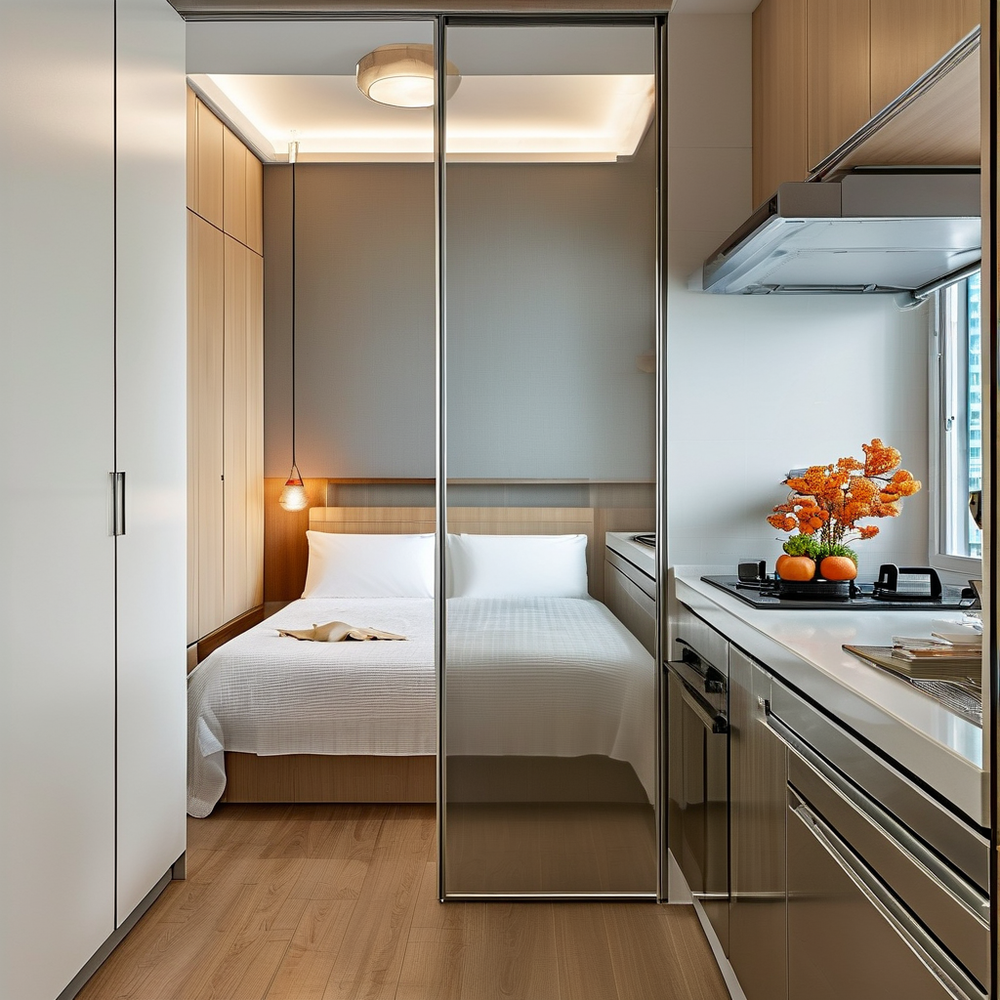
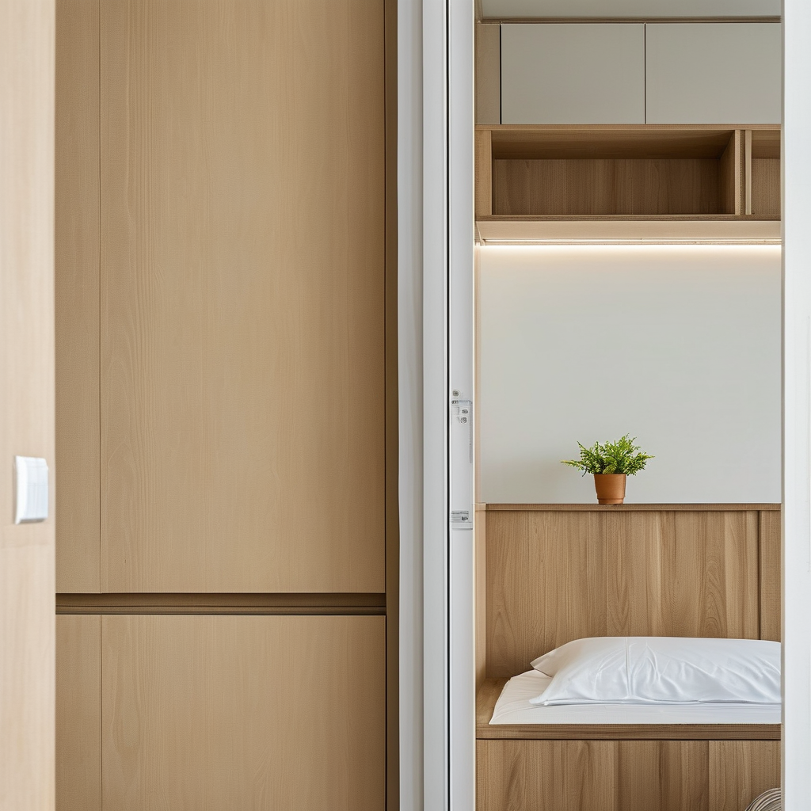
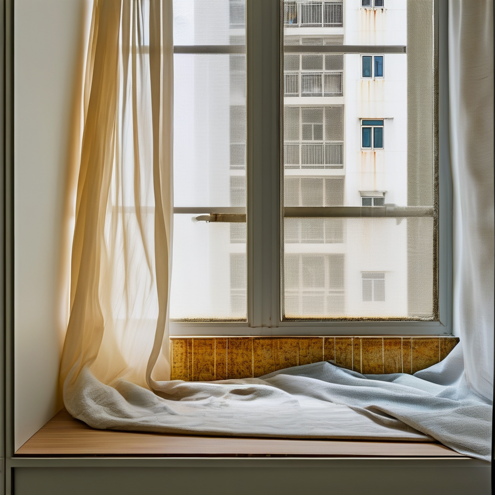
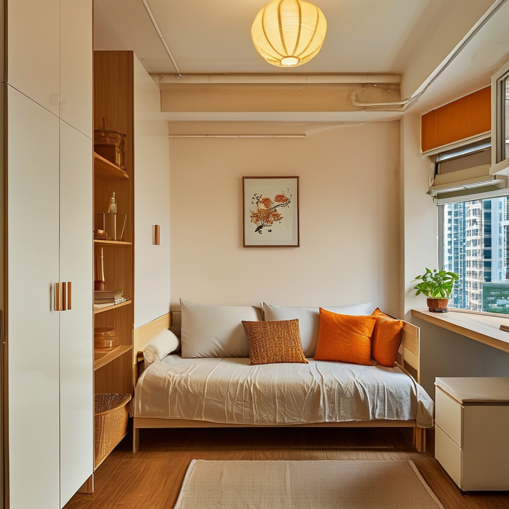

打風前趕起，中秋要團圓：炳師傅的大圍防潮一役

📍 場景：大圍顯徑邨｜師傅：炳師傅（全屋定制廿八年）｜WhatsApp 報價：852 5190 2328
我叫炳哥，做全屋定制廿八年，由木工學徒做起，大圍、沙田呢帶，邊棟居屋咩間隔，我閉住眼都行得出。
琴日一早，天文台話南海個熱帶氣旋「麥德姆」增強緊，週末殺到，周日迎月隨時打風。（編者註：實際風暴路徑與風球安排，請以香港天文台最新公布為準。）我個客阿May即刻WhatsApp我：「炳師傅，中秋（9月25號）阿媽要過嚟團圓食飯，能唔能趕起？」
我望住大圍顯徑邨佢間三百幾呎細單位，廳中間堆滿衫箱，窗台仲有上次落雨滲入嚟嘅水漬。我同徒弟阿細講：「今次唔係趕靚，係趕穩陣，打風加團圓，兩樣撞埋一齊。」
一、靠窗外牆唔好貼死櫃：離牆兩厘米，換十年唔霉
阿May好急，指住睡房埲牆話：「我想呢度成幅牆做衣櫃頂天立地，收納多啲，過節啲月餅禮盒都有位放。」
我搖搖頭，伸手敲敲牆身，篤篤聲帶啲空：「阿May，你聽，呢埲係外牆，靠窗。香港九月又熱又濕，打風斜雨一掃，雨水會由窗框『食』入牆。你個衣櫃如果成幅貼死牆身，背板發霉唔出三個月，衫一攞出嚟陣霉味，中秋團圓都唔開胃。」
佢愣一愣：「咁點呀？唔做櫃冇位擺喎。」
我笑：「唔係唔做，係要識做。靠外牆嘅櫃，我哋一律離牆兩厘米，背後貼防潮錫紙，背板唔用普通密度板，要用防潮夾板。仲有，櫃底唔好落地，用十公分不鏽鋼腳架起，拖地啲水、打風吹入嚟嘅水，就唔會浸住塊板。」
阿細喺側邊搭嘴：「師傅，咁咪少咗兩厘米深？」
我白佢一眼：「後生仔，兩厘米換十年唔霉，你話抵唔抵？做師傅唔係淨係識裁板，係要識睇樓。」

二、窗台漏水唔好疊膠：剷底重打，先係真功夫
跟住我哋搞窗台。阿May話之前搵人打過玻璃膠，仲漏。我用𠝹刀一𠝹，成條舊膠連灰一齊起：「你睇，呢啲就係『疊加打膠』呃人，舊膠唔剷，雨水喺底下走，點打都漏。打風前一定要剷底、吹乾、再重新打耐候膠，窗框兩邊仲要開埋去水窿，唔塞死。」

三、五金唔好貪平：全屋鉸鏈用304不鏽鋼
臨收工，我特登檢查晒所有鉸鏈：「記住，香港鹹濕，鉸鏈一定要304不鏽鋼，唔好貪平用鐵嘅，打一個風季就鏽，到時門較『吱吱』響，阿媽瞓唔着你就煩。」
四、中秋團圓：趕嘅唔係靚，係穩陣
阿May媽咪啱啱買餸返嚟，拎住半打月餅，笑住話：「炳師傅，咁麻煩，不如中秋後先搞啦。」
我抹抹汗話：「阿婆，正正係要趕喺中秋前搞好。你諗下，9月25號中秋夜，一家人喺新櫃前面切月餅，個孫喺露台賞到月，唔使聞到霉味，唔使驚打風漏水，幾好？香港人講意頭，團圓就係要齊齊整整。」
阿婆聽完即刻開咗個月餅：「嚟，師傅食件冰皮先，慢慢做，最緊要穩陣。」
阿May拎住部新摺機幫我影櫃影相，話要send畀屋企人睇。我話：「影啦，過兩日打完風你再嚟睇，牆身乾爽，櫃背唔出汗，先係真功夫。」
落樓嗰陣，樓下茶餐廳阿姐問我：「炳師傅，又趕中秋單呀？」
我笑：「係呀，香港師傅就係咁，打風要頂住，中秋要團圓。櫃做得好唔好，唔係睇迎月嗰晚幾靚，係睇打風嗰晚漏唔漏。」

❓ 炳師傅心得：打風前防潮三招
Q1：靠窗外牆做衣櫃，點樣先唔發霉？
衣櫃離牆兩厘米，背後貼防潮錫紙，背板用防潮夾板唔用普通密度板；櫃底用十公分不鏽鋼腳架起，避免拖地水同打風滲水浸住塊板。
Q2：窗台漏水，點解打完膠仲漏？
好多時係「疊加打膠」——舊膠唔剷，新膠打上去都係面功夫。正確做法係剷底、吹乾、重新打耐候膠，窗框兩邊去水窿唔好塞死。
Q3：香港鹹濕，五金點揀？
全屋鉸鏈同櫃腳配件用304不鏽鋼，唔好貪平用鐵。一個風季鏽蝕之後，門較響、櫃門歪，到時仲煩。
提示：圖片為 SiliconFlow AI 生成的場景示意圖，不是任何實際住戶單位或政府官方照片。實際風暴路徑與風球安排，請以香港天文台最新公布為準。